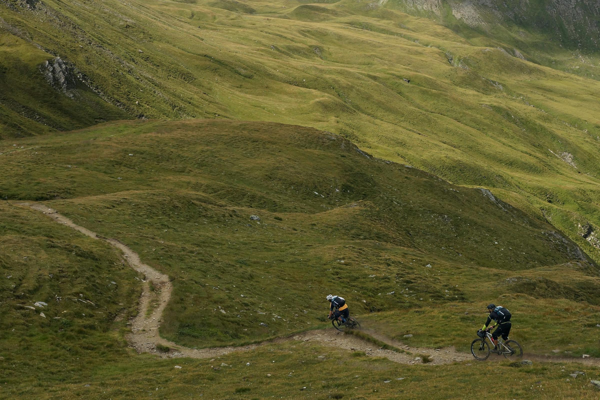
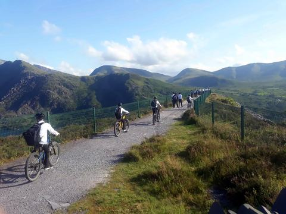
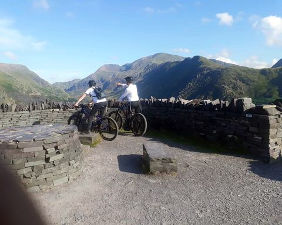

Routes › Route C

CBwlch Maesgwm (Telegraph Pass)
ChallengingGrade
23.4 km14.5 miles
651 mof climbing
3 to 5 hoursStart and finish at the yard
A proper mountain day: the long climb to Bwlch Maesgwm between Foel Goch and Moel Cynghorion, down to the Snowdon Ranger Path and back over the hill from Waunfawr.
- Experienced mountain bikers
Quiet roads and lanes 31%Main roads 28%Tracks and bridleways 41%
The GPX file works in phone apps such as Komoot, Strava and OS Maps, and on bike computers. Route line drawn on OpenStreetMap data, © OpenStreetMap contributors. Spotted a mistake on the map? Report it to OpenStreetMap.
The route
- From the yard, head up past the youth hostel.
- Climb Bwlch Maesgwm, between Foel Goch and Moel Cynghorion. It is long, and very steep at the top.
- Go down the steep grassy track to the Snowdon Ranger Path, then down to the Beddgelert to Caernarfon road.
- Follow the road north through Betws Garmon to Waunfawr.
- In Waunfawr, climb back over the hill. At the top the road becomes a track through quarry waste. Where it forks, keep right to a gate and stile.
- Come down the cart track (steep grass and track), then a steep, rocky section onto a very fast strip of tarmac back to Llanberis.
Good to know
- Take an OS map, and the right kit for the mountains.
- This is a bridleway shared with walkers and horse riders. Close every gate.
- Watch out for the gates part way down both descents.
- About 6.5 km is on the A4085, the Beddgelert to Caernarfon road.
Our other routes
Route A: Clegyr Road circularEasy · 1 to 2 hours, plus a café stop

Route B: Round Llyn Padarn and the Dinorwig quarriesModerate · About 3 hours

Route D: Yr Wyddfa (Snowdon) by the Llanberis PathChallenging · 4 to 6 hours
Route E: Lôn Eifion: Caernarfon to BryncirVery easy · 2 to 3 hours
Route F: Lôn Las Ogwen: Bangor to Llyn OgwenModerate · 2 to 3 hours